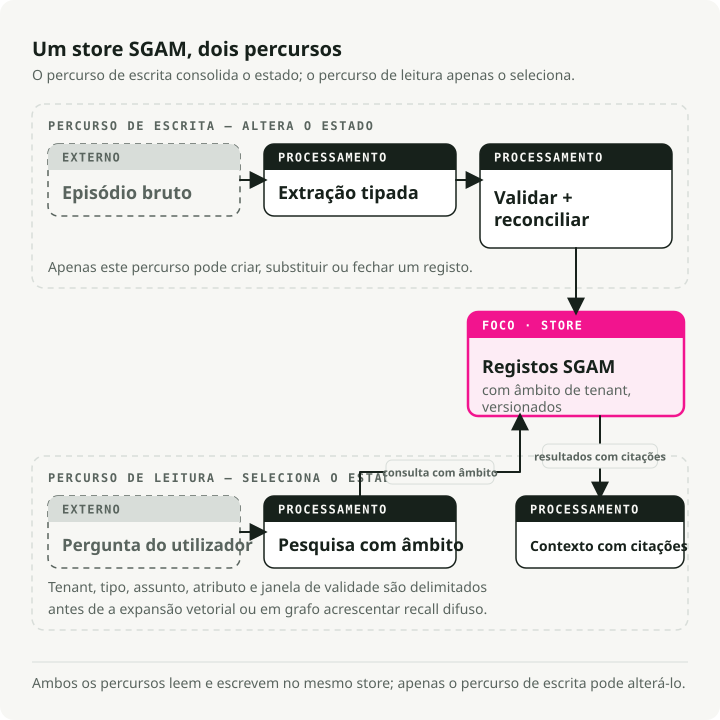

Tradução automática
Este artigo foi traduzido automaticamente a partir da versão original em inglês.
Memória de Agente de IA: Estado Tipado Orientado por Esquema para Sistemas em Execução Contínua
Os agentes raramente falham por esquecerem tudo. Eles falham porque se lembram de um dado antigo e o tratam como estado atual.
Imaginem um assistente em execução contínua a atender uma utilizadora chamada Mira. Numa das interações, Mira indica que o prazo do seu passaporte é 15 de julho. Mais tarde, ela corrige esse valor para 30 de junho. Uma busca vetorial consegue encontrar a anotação antiga. No entanto, ela não consegue, por si só, determinar qual prazo é o atual. Essa é a diferença entre recuperação de informações e memória verdadeira.
TL;DR: Trate a memória duradoura dos agentes como um estado de aplicação tipado. Extraia os candidatos a dados da memória através de uma fronteira de saída estruturada, armazene os registos com escopo de utilizador, janelas de validade, substituição, proveniência e versionamento de esquema, e recupere depois o conjunto mais recente no caminho de leitura. A busca vetorial pode permanecer no sistema; no entanto, não deve ser a fonte autoritativa para factos mutáveis.
A armadilha da janela de contexto
A janela de contexto funciona como um conjunto de trabalho. Não é memória duradoura, nem é uma base de dados.
Agentes em execução contínua precisam de memorizar preferências, estados de tarefas, informações sobre clientes, decisões relativas a ferramentas, notas de conformidade e erros anteriores. A abordagem mais simples consiste em adicionar resumos ou guardar notas antigas num repositório vetorial. Isso funciona até que um dos factos memorizados seja alterado.
Nesse momento, o agente passa a ter dois prazos diferentes, dois formatos preferidos ou duas decisões distintas relacionadas com projetos. A busca semântica pode recuperar ambos os resultados. Um resumo pode substituir um deles. Um contexto extenso pode incluir o dado obsoleto ao lado do atual. Nenhum desses comportamentos oferece um contrato de memória fiável.
O contrato tem de responder a questões concretas:
- O que é verdadeiro agora?
- O que era verdadeiro a 2 de junho?
- Quem o disse?
- A que inquilino pertence?
- Qual facto mais antigo este facto substituiu?
- Posso eliminá-lo ou fazê-lo expirar?
É aí que começa a Schema-Guided Agent Memory (SGAM).
O que significa SGAM
O nome precisa de uma breve adaptação antes de a arquitetura fazer sentido.
Schema-Guided Dialogue (SGD) é o conjunto de dados de diálogo orientado para tarefas da Google de 2019. O seu esquema descreve APIs de serviço, intenções e campos, permitindo que um modelo de diálogo acompanhe o estado de serviços que ainda não viu. Um precedente útil, mas em camada diferente.
Schema-Guided Memory (SGM) é o termo de investigação utilizado por Mei et al. em According to Me: Long-Term Personalized Referential Memory QA. O artigo compara a Memória Descritiva (DM) em texto livre com itens de memória de tipo chave-valor com esquema fixo. As informações de origem são as mesmas; apenas a representação muda.
Schema-Guided Agent Memory (SGAM) é o padrão de engenharia a que este artigo dá nome: utilizar esquemas para gerir escritas, atualizações, recuperação e eliminação de memória duradoura de agentes. O esquema não é apenas um formato de nota mais organizado. É o contrato que define o estado.
ATM-Bench torna essa motivação concreta. Ele utiliza aproximadamente quatro anos de dados de memória pessoal provenientes de e-mails, imagens e vídeos, e depois formula perguntas que exigem referências pessoais, conhecimento da localização, vários elementos de evidência e atualizações ao longo do tempo. Os sistemas atuais de memória apresentam desempenho fraco nessa tarefa complexa, sendo que o SGM supera o DM porque campos como hora, origem, localização, entidades e etiquetas estão disponíveis para o recuperador e o respondente na forma de estruturas, e não apenas como texto descritivo.
É por isso que a próxima comparação será entre SGAM e SGR. O Reasoning Orientado por Esquema não é um desvio aleatório; trata-se, na verdade, do “gate de escrita” de que o SGAM geralmente necessita.
SGR é o gate de escrita
Reasoning Orientado por Esquema (SGR) e Memória de Agente Orientada por Esquema (SGAM) resolvem partes diferentes do mesmo problema de produção.
Eu tenho utilizado o SGR como um componente recorrente neste blog. A versão original Artigo sobre vLLM e XGrammar abordou o mecanismo. Publicações posteriores aplicaram-no a jurados estruturados, planificadores e roteadores, e critérios de avaliação RAG reprodutíveis. Em todos esses casos, o SGR restringiu a chamada de modo a que a resposta fosse suficientemente válida para ser consumida pelo código.
O SGR restringe uma única chamada ao modelo. Ele obriga o modelo a gerar um objeto válido para a etapa atual de inferência, frequentemente através de Pydantic, JSON Schema, saídas estruturadas nativas do fornecedor ou um ambiente de decodificação guiado como o XGrammar.
O SGAM decide o que acontece após a existência desse objeto. Deve ser armazenado? Substitui um fato mais antigo? Qual utilizador pode vê-lo? É atual ou histórico? Qual episódio de fonte o suporta?
| Dimensão | SGR | SGAM |
|---|---|---|
| Escopo | Uma etapa de inferência ou uma chamada à ferramenta | Ciclo de vida da memória duradoura |
| Formato | Pydantic ou JSON Schema para a chamada | Registos tipados, esquemas e relações |
| Aplicação | Saída estruturada ou restrições de tempo de decodificação | Validação, restrições de base de dados, regras de conflito |
| Vida útil | Geralmente descartado após a resposta | Permanece entre sessões e é executado |
| Modo de falha | Extração inválida ou semanticamente fraca | Estado obsoleto, poluído, sem escopo definido ou de difícil auditoria |
O padrão é:
structured extraction on write -> typed memory at rest -> scoped retrieval on read
SGR torna a extração suficientemente fiável para ser inserida na memória. SGAM torna a memória suficientemente segura para ser reutilizada posteriormente.
from datetime import datetime
from pydantic import BaseModel, Field
class MemoryDelta(BaseModel):
tenant_id: str = Field(description="Isolation boundary, e.g. acme")
subject: str = Field(description="Normalized entity ID, e.g. mira")
attribute: str = Field(description="Property being updated")
value: str = Field(description="New value")
valid_from: datetime
source_episode_id: str
Esse objeto não é o sistema de memória. Trata-se da fronteira entre conversas desorganizadas e o registo de memória.
Os dois fluxos
O fluxo de trabalho possui dois caminhos distintos. Misturá-los é o que faz com que os diagramas fiquem extremamente complexos e difíceis de entender.
O fluxo de ingestão representa o caminho de escrita:
- Capturar um episódio bruto a partir de mensagens, resultados de ferramentas ou eventos de negócio.
- Extrair candidatos estruturados através da saída organizada.
- Validar o esquema e rejeitar registros com formato incorreto.
- Resolver conflitos, encerrar informações obsoletas e manter o histórico de origem.
- Registrar o dado no armazenamento SGAM.
O fluxo de solicitação representa o caminho de leitura:
- Partir da pergunta do utilizador.
- Determinar se a pergunta requer o estado atual ou o estado em um determinado momento.
- Filtrar por inquilino, tipo de memória, assunto, atributo e janela de validade.
- Adicionar expansão vetorial ou gráfica apenas quando a busca pelo estado exato não for suficiente.
- Compilar o menor conjunto de contexto relevante para o modelo.

Leia esse diagrama da esquerda para a direita em duas faixas. A faixa superior escreve na memória. A faixa inferior lê da memória. O armazenamento é partilhado, mas as responsabilidades não o são.
O que deve constar num esquema de memória
Um registo SGAM mínimo requer mais do que text.
tenant_id
memory_id
subject
attribute
value
memory_type
schema_version
valid_from
valid_to
supersedes_memory_id
source_episode_id
confidence
retention_policy
Essa estrutura torna as operações habituais mais explícitas. Um novo prazo de validade do passaporte pode substituir o prazo anterior sem eliminar o histórico. Uma consulta pode solicitar o estado atual ou um estado em um determinado momento. Uma resposta pode citar o episódio de origem. Uma migração consegue identificar qual versão do esquema gerou um registro. Um fluxo de exclusão sabe quais índices precisam ser limpos.
É aqui que o SGAM e o RAG se diferenciam: o RAG recupera documentos, enquanto o SGAM mantém o estado.
SGAM não é antivetorial. Os vetores são úteis para recuperação fuzzy, clusterização e expansão. No entanto, o valor atual de mira.passport_deadline Deve provir de um registo de memória delimitado, e não de qualquer bloco que por acaso tenha sido classificado em primeiro lugar.
Um exemplo de facto obsoleto
A demonstração SGAM mais simples e útil é um livro-razão para o exemplo da Mira, com dois episódios.
e1: Mira prefers concise answers. Her passport deadline is 2026-07-15.
e2: Mira corrected the deadline. It is now 2026-06-30.
Uma busca em memória de texto pode retornar e1 porque contém as palavras corretas. Uma loja digitada deve retornar e2 para o estado atual e manter e1 para uma consulta histórica.
O comportamento no lado de escrita é mínimo:
def close_previous_fact(db: sqlite3.Connection, fact: MemoryFact) -> int | None:
row = db.execute(
"""
select fact_id
from memory_facts
where tenant_id = ?
and subject = ?
and attribute = ?
and valid_to is null
order by valid_from desc
limit 1
""",
(fact.tenant_id, fact.subject, fact.attribute),
).fetchone()
if not row:
return None
db.execute(
"update memory_facts set valid_to = ? where fact_id = ?",
(fact.valid_from, row["fact_id"]),
)
return int(row["fact_id"])
O comportamento esperado é o ponto principal:
Naive text memory:
returned episode: e1 -> passport deadline is 2026-07-15
SGAM current state:
mira.passport_deadline = 2026-06-30
valid_from=2026-06-03T10:00:00Z, source=e2
SGAM point-in-time state:
on 2026-06-02, mira.passport_deadline = 2026-07-15
Em produção, associe esta transação à extração estruturada no caminho de escrita. O banco de dados elimina o estado obsoleto. O modelo não deve precisar de adivinhar qual nota antiga ainda é aplicável.
| Ferramenta ou framework | Camada de armazenamento principal | Tratamento temporal | Mecanismo de esquema | Nicho prático |
|---|---|---|---|---|
| Zep / Graphiti | Suporte a Neo4j, FalkorDB, Neptune e Kuzu legado | Alto | Entidade Pydantic e tipos de aresta, arestas temporais, proveniência | Memória de grafo temporal |
| LangGraph / LangMem | Armazenamentos do LangGraph, armazenamentos suportados por Postgres | Médio | JSON armazena perfis ou extração de coleções com Pydantic | Aplicações de agente já desenvolvidas com o LangGraph |
| Stack gerida, backends Valkey / Redis / vector em configurações OSS | Médio | Tipos de memória, categorias personalizadas, prompts de extração | Memória de utilizador, agente e sessão como serviço | |
| Letta / MemGPT | Estado do agente e blocos de memória suportados por base de dados | Baixo | Agentes com estado e gestão de contexto ao estilo do SO | |
| Cognee | Backends gráficos, vetoriais e relacionais | Médio | Extração e validação orientadas para ontologias | Memória de grafo de conhecimento empresarial |
| Gráfico de propriedades do LlamaIndex | Armazenamentos de grafos de propriedades e armazenamentos vetoriais | Baixo a médio | SchemaLLMPathExtractor com entidades e relações permitidas |
Extração de grafos a partir de documentos e rastreios |
Graphiti é a referência de código aberto mais completa quando a sua memória é de tipo relacional e temporal. Ele regista os factos à medida que estes são alterados, mantém a proveniência dos episódios originais e suporta recuperação híbrida. O LangGraph é uma boa opção a nível de camada de aplicação, pois separa os pontos de verificação de cada thread das bases de dados interthread. O Mem0 é útil quando se pretende operações de memória geridas, em vez de ter de gerir toda a infraestrutura de armazenamento manualmente. O Letta está mais próximo de blocos de contexto editáveis do que dos sistemas SGAM a nível de campo, mas a abordagem baseada em agentes com estado continua a ser relevante.
Não comece com o gráfico mais sofisticado, a menos que o domínio o exija. Para muitas equipas, uma tabela relacional com payloads em JSON, colunas de validade, índices de tenant e um sidecar vetorial é suficiente para a primeira versão.
Manual de implementação
A primeira decisão de implementação não é “armazenamento em grafo ou vetorial?”, mas sim o que o produto está autorizado a memorizar.
Um agente de suporte pode memorizar o nível da conta, os casos abertos e as preferências de contacto duradouras. Não deve converter todos os pedidos frustrados em registos no perfil. Um agente de programação pode memorizar as convenções do repositório e as tarefas por resolver. Não deve manter uma nota privada para sempre só porque essa nota foi consultada uma vez.
Comece pelo caminho de escrita e trate a memória como uma pequena mutação de estado:
- Nomeie o tipo de memória, o assunto, o âmbito do utilizador e a classe de retenção.
- Extraia os registos candidatos com uma saída estruturada.
- Valide a carga com Pydantic ou com a camada de esquema já utilizada pela sua stack.
- Resolva conflitos antes da inserção, incluindo se o novo registo substitui um antigo.
- Mantenha um ponteiro de origem para o episódio bruto, o resultado da ferramenta, o ficheiro, o ticket ou a confirmação do utilizador que gerou o registo.
- Registe a versão do esquema juntamente com o registo, e não apenas no código da aplicação.
Para muitas equipas, o primeiro armazenamento SGAM pode ser uma tabela relacional com uma coluna JSON e alguns índices. Não é necessário começar com um grafo de conhecimento temporal. O grafo torna-se útil quando as relações são importantes: cliente-conta, conta-política, tarefa-artefacto, utilizador-preferência, projeto-Decisão.
Caminho imediato e escritas em segundo plano
A extração imediata vale a pena quando a próxima ação depende da nova memória. Se o utilizador disser “lembre-se de que prefiro respostas curtas”, o sistema não precisa de uma tarefa noturna para começar a comportar-se de forma diferente.
A maioria das interações não é assim. A abordagem mais económica por defeito consiste em escrever rapidamente o episódio bruto, anexar metadados de inquilino/sessão/ferramenta e deixar um processo em segundo plano extrair memórias candidatas posteriormente. A consolidação baseada em recorrência é uma versão dessa política: armazena interações com sinal fraco e promove um facto apenas quando evidências semelhantes se repetem ou o utilizador o confirma explicitamente. O trade-off é um atraso na atualização dos dados. Isso é aceitável no caso de “o utilizador pedir frequentemente exportações em CSV”, mas menos aceitável quando “o cliente alterou o endereço de entrega”.
O caminho de leitura deve ser menos sofisticado do que o caminho de escrita. Primeiro, responder “em que estado posso utilizar?” e depois perguntar se a recuperação fuzzy pode adicionar contexto útil.
- Filtrar por inquilino, tipo de memória e janela de validade.
- Recuperar primeiro o estado estruturado exato, e depois os vizinhos semânticos.
- Utilizar expansão vetorial ou gráfica para evidências complementares, entidades relacionadas e exemplos, mas não como fonte autorizada para os factos atuais.
- Montar o menor conjunto de contexto citado que possa responder à pergunta.
Tratar a migração de esquemas como trabalho de produto. Quando um registo de memória muda de formato, o comportamento do agente também muda: o que ele consegue recordar, o que consegue citar, o que consegue eliminar e quais factos antigos continuam a ser considerados atuais. Manter os scripts de migração, os preenchimentos retroativos, as janelas de leitura dupla e o comportamento de eliminação no mesmo plano de lançamento da alteração do produto.
Onde o SGAM se destaca
O SGAM é adequado quando a memória tem estado e sofre alterações ao longo do tempo:
- Preferências do utilizador que podem ser atualizadas ou revogadas;
- Dados de cliente ou conta com requisitos de auditoria;
- Estado da tarefa para assistentes em execução prolongada;
- Memória do projeto do agente de codificação;
- Estado partilhado entre múltiplos agentes;
- Notas de conformidade em que a origem dos dados é importante;
- Questões temporais como “no que acreditávamos antes da migração?”
É um exagero quando a memória tem vida curta, é exploratória ou quando é barato recomputá-la. Se o agente precisar apenas de algumas iterações de continuidade, um ponto de verificação e um histórico de mensagens reduzido são suficientes. Se a tarefa for a verificação de qualidade de documentos estáticos, o RAG pode ser suficiente. Se o seu esquema mudar todos os dias porque o domínio ainda é vago, o SGAM irá abrandá-lo.
Lista de verificação de avaliação
Não avalie a memória apenas lendo a resposta final. Um sistema de memória pode responder de forma educada mesmo quando escreveu um facto incorreto, recuperou um dado desatualizado ou ultrapassou os limites de um determinado utilizador no processo.
A estrutura é semelhante à divisão de avaliação no meu Artigo de avaliação de RAG: Meça a fase do pipeline onde a falha pode ocorrer, e não apenas o texto gerado no final. Isso também se sobrepõe à disciplina de rastreio proveniente de o artigo de avaliação de agentes: um erro de memória costuma ser visível no histórico de execução antes de se tornar evidente na resposta.
No caso do SGAM, o teste mais eficaz é a reprodução. Insira uma sequência fixa de episódios no escritor de memória, verifique o registo após cada turno significativo e, em seguida, faça perguntas sobre o estado atual e sobre um determinado momento no tempo com base no armazenamento resultante.
| Camada | Falha que está a procurar | Medidas |
|---|---|---|
| Escrever extração | O agente omitiu um facto, inventou um ou gerou uma forma inválida. | Taxa de escrita com validação de esquema, precisão/recuperação da extração, cobertura dos episódios de origem |
| Gestão de conflitos | Um facto desatualizado continuou a ser considerado atual ou um facto antigo válido foi substituído. | Correção de supressão, taxa de duplicatas, correção de invalidação de factos obsoletos |
| Isolamento e políticas | Vazamento de memória entre utilizadores ou persistência para além do período definido pela política | Falhas de isolamento de inquilinos, correção na eliminação, conformidade com políticas de retenção |
| Recuperação de leitura | O registo correto existe, mas o leitor não o recuperou. | Precisão no estado atual, precisão em um ponto específico no tempo, recall@k nos registos de memória |
| Resposta de ancoragem | A resposta utilizou memória sem suporte ou citou a fonte incorreta. | Solicitar suporte relativamente a episódios de origem, precisão das citações e correção na resolução de conflitos |
| Operações | O caminho de memória é demasiado lento, demasiado desatualizado ou demasiado dispendioso. | latência de escrita p95, atraso de atualização, latência de leitura, custo por consulta |
Benchmarks como LoCoMo, LongMemEval, e ATM-Bench Forneçam sinais externos úteis. Eles não substituem um conjunto de testes de domínio. A memória é moldada pela carga de trabalho: um assistente de programação, um bot de suporte ao cliente e um copiloto de conformidade exigem esquemas, filtros, regras de retenção e testes de falha diferentes.
Considerações importantes
SGAM é a minha designação para um padrão, e não um padrão padrão. A indústria já utiliza nomes sobrepostos para elementos do mesmo espaço de design: Memória LangGraph e LangMem Fale sobre armazenamentos de curto e longo prazo, perfis, coleções, escritas em caminhos críticos e gestores de memória em segundo plano. Zep Graphiti chama a versão em forma de grafo de Contexto Temporal. Letta modela o sistema como agentes com estado, dotados de blocos de memória persistidos. Mem0 chama a si mesma de camada de gestão de memória. Microsoft GraphRAG, os grafos de propriedades do LlamaIndex e o Cognee utilizam a linguagem de grafos de conhecimento para resolver problemas relacionados com recuperação de informação e ontologias.
Esses nomes não são intercambiáveis. Alguns sistemas gerem perfis de utilizador. Outros gerem episódios. Alguns criam contexto gráfico a partir de documentos. Outros fornecem ao agente ferramentas para editar a sua própria memória. O SGAM é a versão mais rigorosa desta afirmação: quando a memória duradoura representa o estado atual da aplicação, é necessário dispor de esquema, validade, proveniência, gestão de conflitos, retenção e migração.
A memória tipada ainda pode estar errada. Um esquema facilita a inspeção de escritas incorretas, mas não as torna fidedignas. Ainda é preciso confiança na fonte, confirmação do utilizador para factos sensíveis, política de gestão de conflitos, eliminação e monitorização.
A migração de esquemas é um trabalho complexo. Uma vez que a memória se torna um estado, é necessário gerir a versãoção, os preenchimentos retroativos, os registos antigos e o comportamento de eliminação. Esse é o preço a pagar para obter um estado atual fiável, em vez de um conjunto de notas plausíveis.
Principais conclusões
- O contexto corresponde a um conjunto de dados em uso. A memória de um agente duradouro requer um contrato de estado separado.
- O SGR e o SGAM são complementares: primeiro deve-se validar a escrita, e depois preservar o ciclo de vida da memória tipada quando esta está inativa.
- A recuperação vetorial é útil, mas os factos atuais necessitam de definição de escopo, validade, possibilidade de substituição e proveniência.
- Comece com um livro-razão de memória simples, baseado em relações ou em JSON, antes de recorrer a estruturas gráficas.
- Avalie a memória com base na correção das escritas, na recuperação temporal, na fundamentação dos dados, no isolamento entre utilizadores e no comportamento de eliminação.
Referências
- De acordo comigo: QA de Memória Referencial Personalizada a Longo Prazo - Artigo de Mei e colaboradores que introduz o ATM-Bench e a Memória Guiada por Esquema. Rumo a Agentes Conversacionais Multidomínio Escaláveis: O Conjunto de Dados de Diálogo Guiado por Esquemas - Artigo de Rastogi et al. sobre o conjunto de dados SGD. LongMemEval: Avaliação de assistentes de chat com base em memória interativa de longo prazo - O benchmark de Wu et al. para capacidades de memória de longo prazo. Graphiti: Crie Gráficos de Contexto Temporal para Agentes de IA
- Zep: Uma Arquitetura de Grafo de Conhecimento Temporal para a Memória de Agentes
- Visão Geral da Plataforma Mem0
- Mem0: Criação de Agentes de IA prontos para produção com memória de longo prazo escalável
- Visão Geral da Memória do LangGraph
- Persistência do LangGraph
- Documentação LangMem
- Letta: Introdução a Agentes com Estado
- Documentação do Microsoft GraphRAG
- LlamaIndex: Utilização de um índice de grafo de propriedades
- Documentação Cognee
- Documentação de validação de modelos Pydantic
- Documentação do Python sqlite3